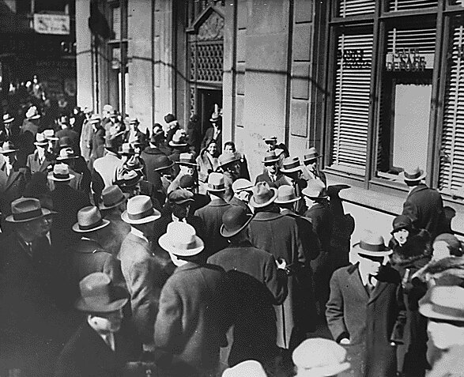
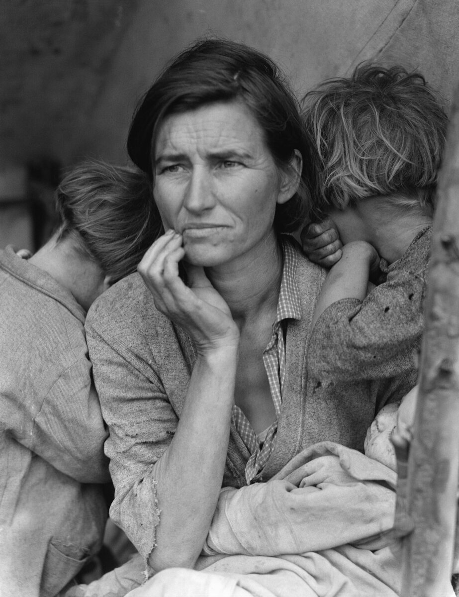
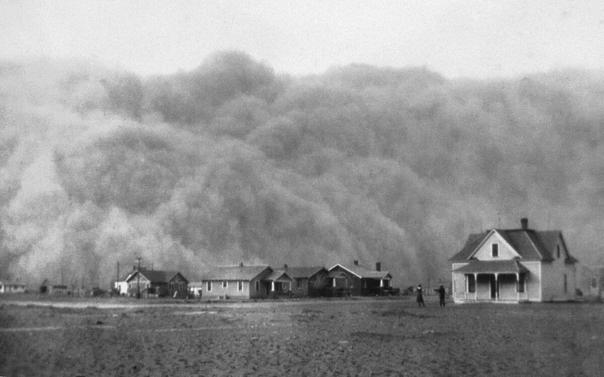

B2 · American History
The Text
Play the audio and follow along, then read it again on your own. Hover over a highlighted word to see what it means.
Listen & Read
The Great Depression
The stock market crashed in October 1929. The part that ruined people came later, and more quietly.
The stock market crash of October 1929 is the image everybody has of the Great Depression, and it is the least important part of the story. Only a small minority of Americans owned shares. What ruined ordinary families came afterwards, and it arrived through their banks.
A bank in 1930 kept only part of its deposits as cash and lent the rest. That works until enough customers want their money on the same morning. When one bank failed, depositors at the next one queued to withdraw, which made the next one fail too. About nine thousand banks went under between 1930 and 1933, and there was no deposit insurance: when a bank closed, the savings in it simply ceased to exist.

The numbers that followed are hard to hold in the mind. Unemployment reached roughly twenty-five per cent — one worker in four — and in some industrial cities it was far worse. National income fell by almost half. Industrial production halved.
There was no federal unemployment insurance, no retirement pension and no food assistance, because the country had never built them. Help meant a local charity, a church, a soup kitchen, or your family.
Daily life changed shape. Families moved in together. Men who had worked for twenty years stood in breadlines and were ashamed to be seen. Marriage and birth rates fell. Hundreds of thousands of people, many of them teenagers, rode freight trains around the country looking for work, and camps of the homeless appeared on the edges of cities.

On top of the economic disaster came an environmental one. Years of ploughing grassland that should never have been ploughed, followed by severe drought, turned the southern plains into the Dust Bowl. Storms of airborne topsoil darkened the sky as far east as Washington and New York. Around two and a half million people left the plains states, and the families who went west to California found the work there already taken and the welcome cold.

The response of the federal government under President Hoover was initially limited — the governing assumption was that recovery would arrive on its own and that direct federal relief would damage self-reliance. By 1932 that position had become politically impossible, and Franklin Roosevelt won the election by a distance.
It is worth being clear about what ended the Depression, because it is still argued about. The New Deal from 1933 stopped the collapse, rebuilt confidence in the banks, and put millions of people to work, but unemployment was still around fourteen per cent in 1937, and a sharp recession that year showed how fragile the recovery was. Full employment arrived with the enormous government spending of the Second World War.
The lasting consequences were institutional rather than economic. Deposit insurance, old-age pensions and unemployment insurance, a regulated stock market, and the general assumption that the federal government is responsible for the state of the economy all date from these years.
The generation that lived through it was marked for life. People who were children in the 1930s kept string, reused envelopes and distrusted banks forty years later, when they were comfortable and had no need to.
Vocabulary
- a share — one of the equal parts into which a company's ownership is divided
- a deposit — money placed in a bank account
- to withdraw — to take money out of a bank account
- deposit insurance — a government guarantee that savings are protected if a bank fails
- unemployment — the state of having no paid work, or the number of people in it
- a breadline — a queue of people waiting for free food
- drought — a long period with no rain
- topsoil — the upper layer of soil, where plants grow
- relief — help, especially money or food, given to people in need
- self-reliance — the ability to manage without help from others
Interactive Exercises
Practice
Complete each exercise, then click Submit to see your score and an explanation for every answer.
Speaking & Writing
Discussion
There are no right answers here — use these to practice speaking, or write a short answer to each.
- The text says the crash mattered less than the bank failures. Why do you think the crash is the image everyone remembers?
- Which of the institutions created in the 1930s — deposit insurance, pensions, unemployment insurance — would your country miss most?
- People who lived through it kept frugal habits for life. Has a crisis changed the habits of anybody in your family?